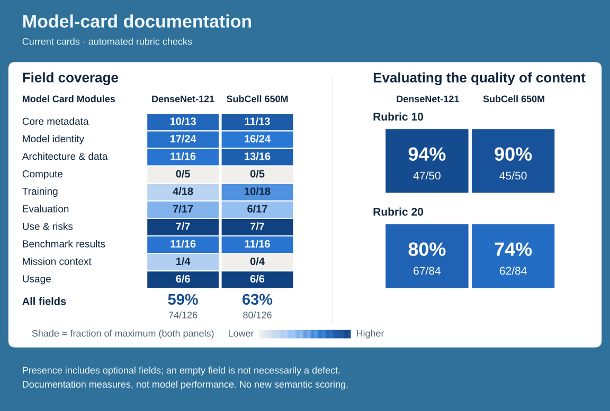
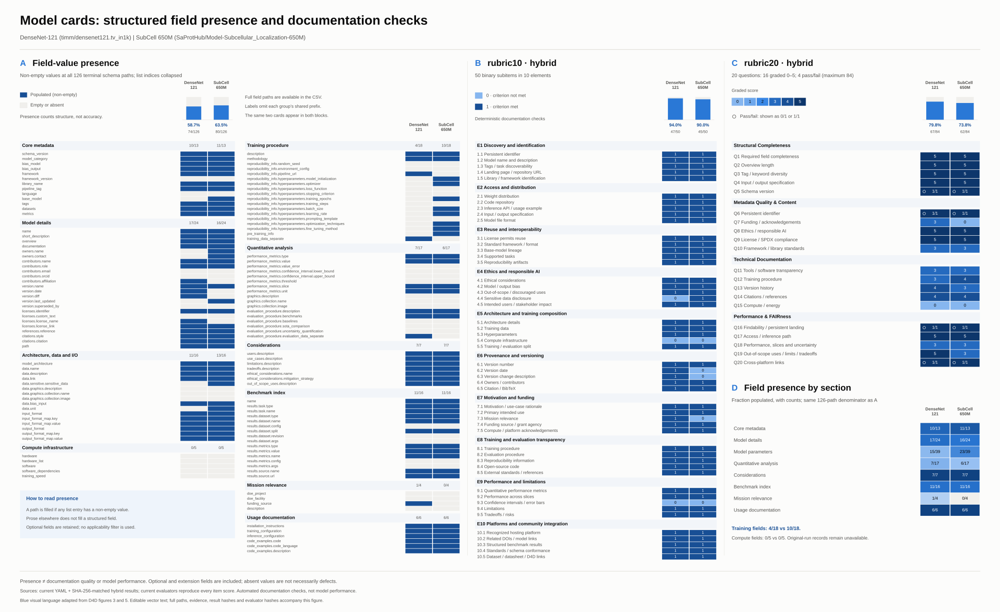

Current YAML field coverage and hash-matched hybrid rubric scores. Documentation measures, not model performance.
Transparent PNG (place this on the portfolio poster)PDFEditable SVG300-dpi PNG

PDFEditable SVGHigh-resolution PNG

Methods and provenance · Exact summary data · Field presence CSV · Rubric scores CSV · Builder provenance · Poster provenance